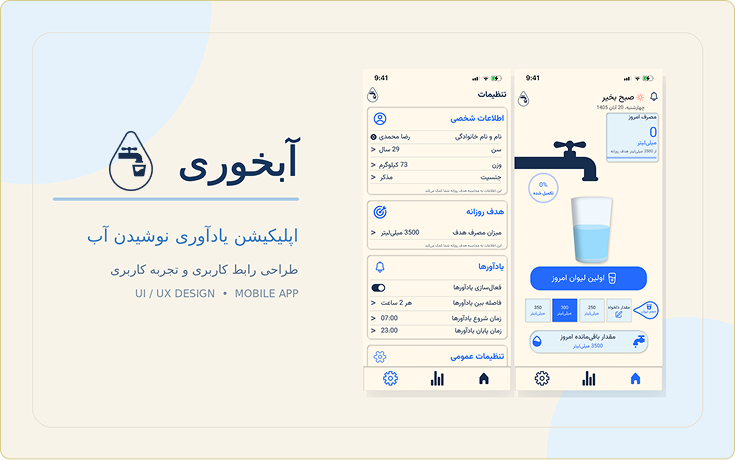
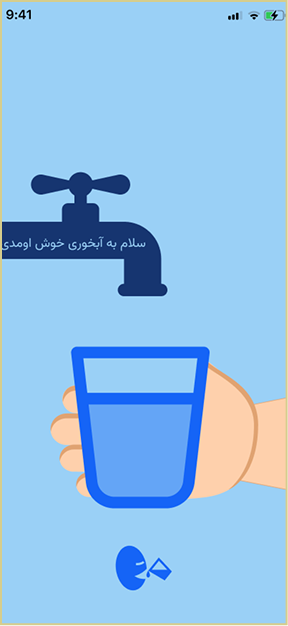
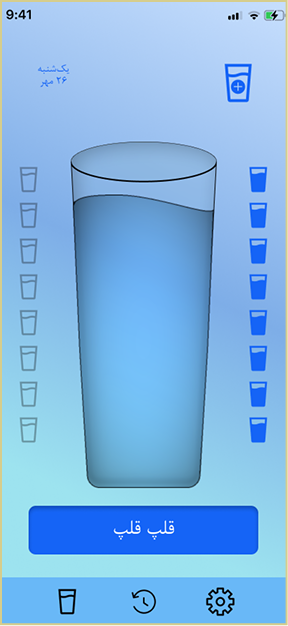
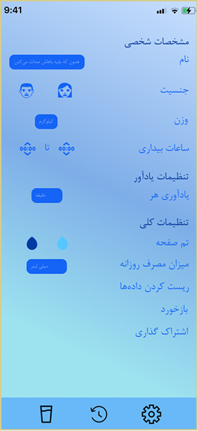
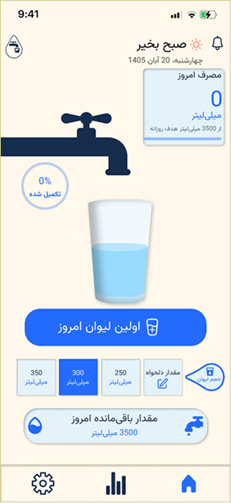
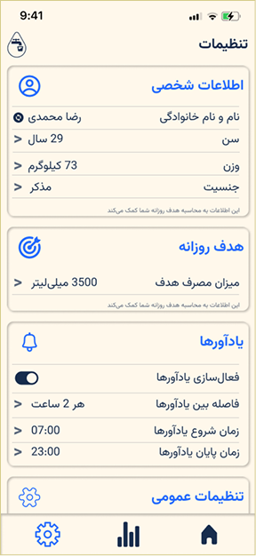
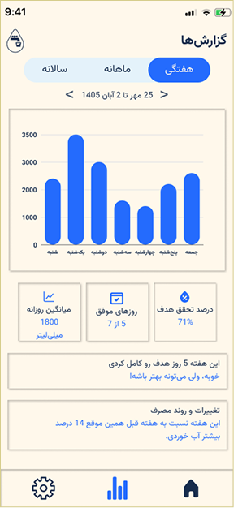

Hydration, a forgettable necessity
water is what we’re mostly made of, and yet sometimes we forget to drink it regularly, which causes discomfort or even disease at cases.

OVERVIEW
my main goal was to design a user-friendly water drinking reminder app, through wireframes i tried to be as original as i could, but i went on to realize i got neither the research nor the experience to design the ultimate fun initiative app, so i decided to stick to what people prior me have done with the concept, a classic water drinking reminder app and if possible add some cool ideas i got along the way. the result was pretty much what i expected and nothing more, just another typical reminder app. but i hoped for it to have a glimpse of something more, something promising, showing the people i’m making this portfolio for can spot. i mean that’s all this is about anyways, to showcase the potential and vision i got.
Research
i got myself an achilles heel in this area, since as a concept project, as i said earlier, research as it is done in this profession wasn’t feasible for me. instead i focused on studying the similar apps to both getting inspiration and knowing the issues i need to solve better.
Basic research
i had a vague idea of what i can do with this project, but similar apps helped me a lot knowing what is mandatory for these kind of apps i can’t change, and what are flexible useless stuff that were basically begging me not to include in my design. and it’s true that i didn’t have users to test stuff on, but the least i could do was behave as a user myself and i know it may sound uncanny, but i really got some usable feedbacks for myself.
Outcomes
Well, the results weren’t perfect, but they were RESULTS, and once you got them you got something to base your work on. so that was enough for me to get going and get better - if possible - along the way, and at least i got a design anyway. that was my mindset during this project, i am known to be a perfectionist, but i figured out some days into the project that perfectionism DOES NOT pay off for me right now, not to mention that it never does.
Lo-fi prototyping
soon my wireframes were something you can look at, and then came the prototyping and testing, which i learned right at the start that i should do constantly, for the obvious reason that finding the problems is much better be done sooner than later.



The transformation
Then it was only the matter of making it look better and better, and obviously more responsive, I tried to do the fancy stuff and stay motivated all along. you can see how it changed and became the below shots through the process. not bad i guess, right?



Final Concept
the shots you just saw last were the things i spent my time on the last couple of weeks (well, the shots and animations which you can see on this page), in addition to the homepage animation, i made some animations for the intro page when you first open the app, i think i can still make it better or come up with more interface ideas. but i guess sometimes you just have to let go.